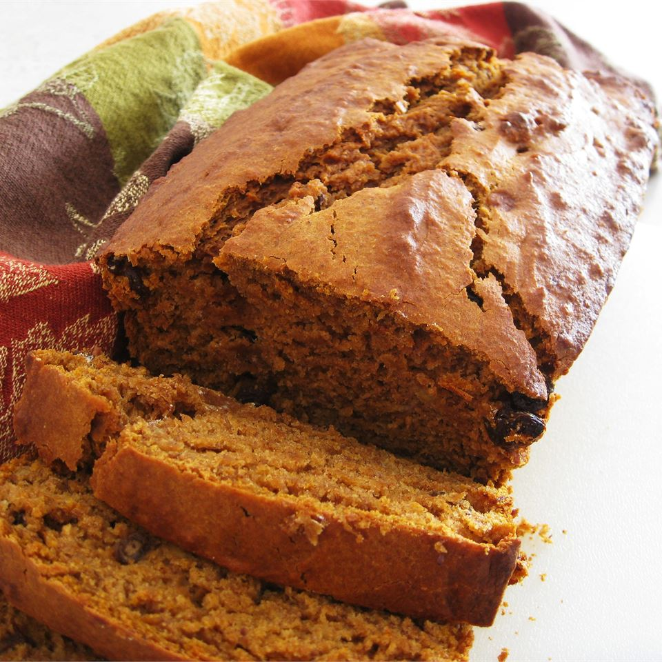

Pumpkin Banana Bread

This is a moist, tasty breakfast bread perfect with jam, margarine,
or even cream cheese. Best of all, it's low in fat!
Ingredients
- 2 ripe bananas, mashed
- 2 eggs
- 1/3 cups vegetable oil
- 1 1/3 cups canned pumpkin puree
- 1/2 cup honey
- 1/2 cup white sugar
- 2 1/2 cups all-purpose flour
- 1 teaspoon baking powder
- 1 teaspoon baking soda
- 1/2 teaspoon salt
- 2 teaspoons pumpkin pie spice
- 1 teaspoon ground cinnamon
Directions
- Preheat oven to 350 degrees F (175 degrees C). Grease an 9x5 inch loaf pan.
- In a large bowl, stir together the mashed banana, eggs, oil, pumpkin, honey and sugar.
Combine the flour, baking powder, baking soda, salt, pie spice and cinnamon, stir into
the banana mixture until just combined. Fold in the raisins and walnuts if desired. Pour
atter into the prepared pan.
- Bake at 350 degrees F (175 degrees C) for 45 minutes, or until a toothpick
inserted into the center of the loaf comes out clean. Cool loaf in the pan for
10 minutes before moving to a wire rack to cool completely.